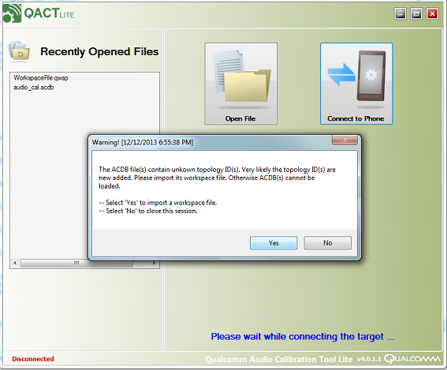
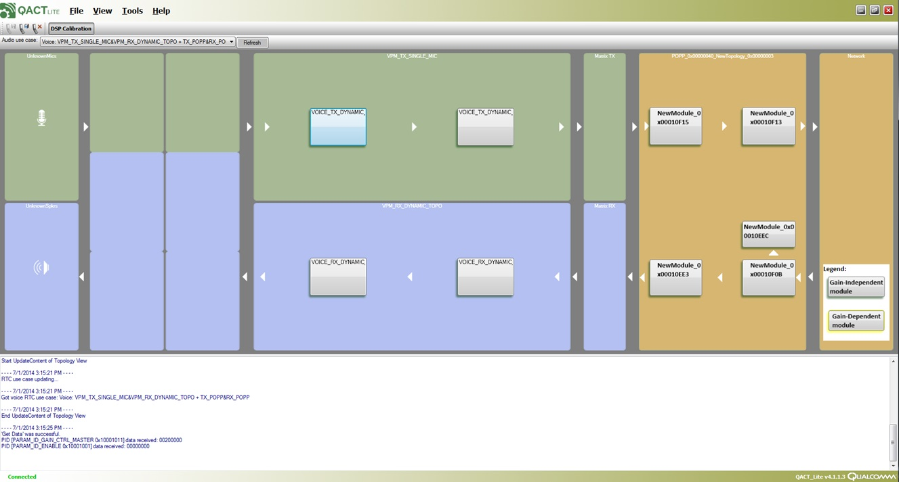
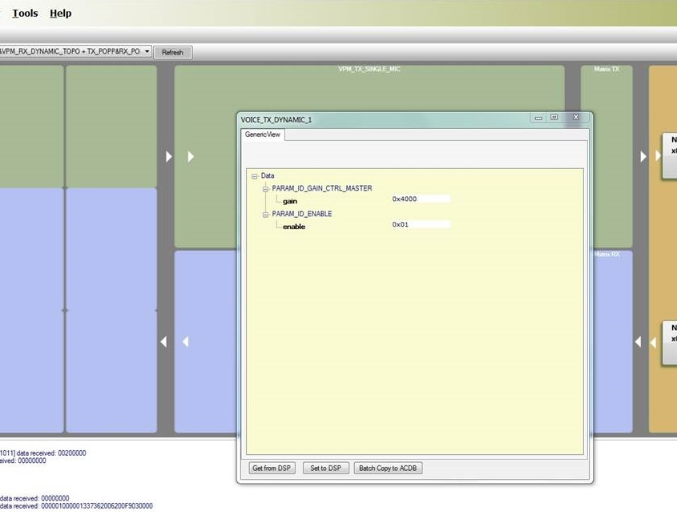

Voice module: on-target
Overview
A dynamic library generated and tested on simulator earlier can be loaded on target (Android device).
The steps are summarized below
-
Push Voice module(s) to device
-
Update the ACDB (Audio Calibration Database) with details of custom topology
-
Start voice call
-
Conduct real time calibration of the module
Push Voice module(s) to device
Voice framework loads custom shared object files at either ADSP boot time or at demand basis.
Run following commands to push the files to /system/lib/rfsa/adsp
-
adb root
-
adb remount
-
adb push <HEXAGON_SDK_ROOT>/examples/audio/capi_v2_gain/hexagon_Debug_dynamic_toolv81_v65/ship/capi_v2_gain.so /system/lib/rfsa/adsp
-
adb reboot
Pushing above files and signing can be done together by running a following script,
<HEXAGON_SDK_ROOT>/scripts/push_voice_module.cmd capi_v2_gain
Signing of device : generation of testsig.so
Signing of device is an important step to allow loading of unsigned dynamic modules, otherwise loading of modules will fail. Run the following command file to enable it. <HEXAGON_SDK_ROOT>\scripts\testsig.cmd
For more information about Elfsigner, please refer Signing
Update the ACDB with details of custom topologies
QACT (Qualcomm Audio Calibration Tool) Lite helps to calibrate the modules with set of parameters defined and associate the custom topology with supported devices.
Follow the steps mentioned below,
Start voice call
Start voice call and verify the logs on mini-dm.exe from module on console
Real Time Calibration of Module
QACT Lite provides a GUI based calibration for custom voice modules.
-
Launch QPST
-
Launch QACT and choose “Connect to Phone” icon.
If you encounter a message as shown below, click 'Yes' and browse to the ACDB location we have created in previous steps (Eg: C:\WORK\ACDB\GAIN_ADDED ). Choose the workspace file.
 Click on 'DSP Calibration' as shown below. Start voice loopback test. You will see the COPP topology with CAPI_V2_GAIN in it.
 Double click on the CAPI_V2_GAIN box and you will see the calibration window for the module.
Now you may set the various parameters for the module, in real time. Set the enable flag to 0x1, and provide a gain.
After configuring the values, click on “Set to DSP” and you can feel the effect of gain in the live voice loopback.
 The Option “Get from DSP” can be used to retrieve the existing parameter values from the DSP.
Troubleshooting Steps (for Shared Objects Only)
If a custom module is a shared object, follow these steps to check if the shared object is loaded properly:
-
Rename adsprpcd to block bootup dynamic loading processing:
-
adb root;
-
adb remount;
-
adb shell mv /system/bin/adsprpcd /system/bin/adsprpcd1;
-
adb reboot;
-
This approach is required for shared objects that are loaded at boot time.
-
If the custom module is not loadedat boot time but is loaded per a use case, do not renameadsprpcd. Running the use case is sufficient to get loading errors.
-
-
Wait for the target to connect with the QXDM Professional tool (QXDM Pro).
-
In QXDM Pro, enable QDSP6 logs:
-
Right-click and select Config....
-
Select Known Messages (By Subsystem) > Enable/Check QDSP6.
-
-
Start the adsprpcd1 process:
-
adb root;
-
adb remount;
-
adb shell
-
cd /system/bin
-
./adsprpcd1
The logs should load in the QXDM Pro window. Any loading errors are also displayed in this window.
-
-
When finished debugging, rename adsprpcd1 back to adsprpcd:
-
adb root;
-
adb remount;
-
adb shell mv /system/bin/adsprpcd1 /system/bin/adsprpcd;
-
adb reboot;
-
Copyright © 2018 Qualcomm Technologies Inc. All rights reserved.